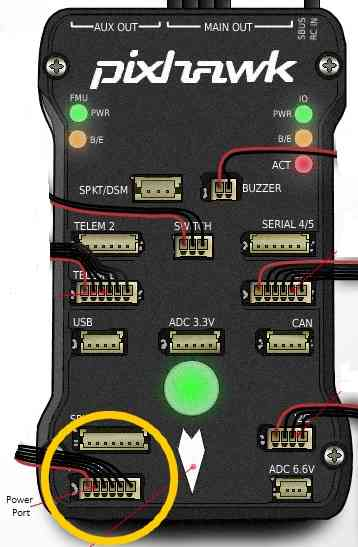
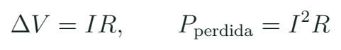
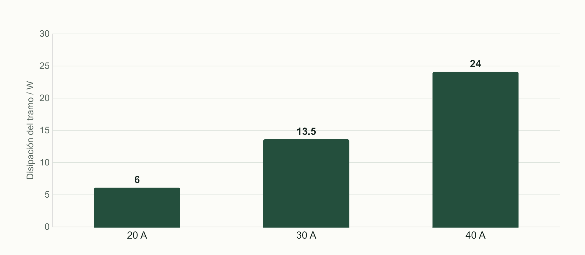

Alimentación, cableado y montaje que se puede revisar
Interpretar un esquema de energía y preparar una secuencia de montaje y comprobación antes de alimentar.
Batería, ESC, regulador y controladora
La batería entrega energía a la distribución de potencia. El ESC gobierna las corrientes del motor y recibe una señal de mando. La FC y los periféricos necesitan sus propias condiciones de alimentación: algunos módulos admiten tensión de batería y otros requieren una línea regulada. Un pin marcado 5V y otro marcado VBAT no se intercambian porque estén juntos. El esquema se lee desde cada carga hacia su fuente y desde cada fuente hacia sus cargas.

En un autopiloto, el módulo de potencia puede aportar alimentación regulada y medida de tensión/corriente. Esas funciones no son idénticas a alimentar la línea de servos. Una FC compacta puede integrar reguladores y conectarse a un ESC 4 en 1 mediante arnés. La construcción cambia, pero se mantienen las preguntas: qué tensión entra, qué sale, qué corriente puede entregar y cuál es la referencia de cada señal.
Se documenta cada extremo del cable. Si una revisión del fabricante cambia el orden del arnés, conservar el nombre del conjunto no basta: hay que contrastar el dibujo de esa revisión. La primera inspección se hace sin batería conectada.
La tensión máxima y el presupuesto del regulador
En una LiPo convencional de 4,2 V por celda a plena carga, 4S alcanza 16,8 V y 6S alcanza 25,2 V. Las tensiones nominales aproximadas son menores. La compatibilidad de entrada se revisa contra el máximo del paquete y la química reales, no solo contra una cifra nominal. No se trasladan esos valores automáticamente a LiHV, Li-ion o un paquete con otra especificación.
Cuatro referencias eléctricas
| Nombre | Papel | Comprobación |
|---|---|---|
| VBAT | Tensión del paquete | Máximo y polaridad |
| 5V regulado | Alimentación de una carga compatible | Tensión y corriente disponible |
| 3V3 / lógica | Alimentación o nivel según diseño | Manual de placa y periférico |
| GND | Referencia y retorno según circuito | Continuidad y topología |
El regulador del caso
Una salida de 5 V y 1 A alimentaría FC 0,9 A, receptor 0,4 A y otro periférico 0,2 A. ¿Basta que todos pidan 5 V?
Ver razonamiento del caso
No. La suma del caso es 1,5 A, superior al límite indicado de 1 A. Se revisa distribución y capacidad con condiciones reales. Son consumos hipotéticos de aula, no valores asignados a equipos MECRO.
El margen de un regulador debe considerar picos y temperatura. Una línea que sostiene una carga en reposo puede caer cuando otra empieza a consumir. Por eso un reinicio al actuar un periférico se investiga primero con alimentación y referencia, además del software.
La preparación del paquete también pertenece al ensamblaje: identificar química, número de celdas, estado y conector de balanceo, y usar un cargador compatible con el procedimiento del fabricante. No se deduce una corriente de carga del límite de descarga comercial. El docente muestra inspección y almacenamiento del paquete sin convertir la clase en una improvisación de carga. Un paquete dañado, una conexión equivocada o un ajuste de química incorrecto no se corrigen con parámetros de vuelo.
Corriente, pérdidas y calidad de la unión

Una unión que añade resistencia
Con R = 0,015 ohm, ¿qué ocurre al pasar de 20 A a 40 A?
Ver razonamiento del caso
A 20 A: caída de 0,30 V y pérdida de 6 W. A 40 A: caída de 0,60 V y pérdida de 24 W. La corriente se duplicó y la disipación se cuadruplicó. Es un modelo de aula para comprender por qué una unión importa.
Una soldadura necesita mojado adecuado de las superficies y continuidad eléctrica, con sujeción mecánica del conductor. El brillo por sí solo no decide la calidad para todas las aleaciones. El docente muestra limpieza, aporte de flux apropiado, estañado, unión y revisión sobre una muestra de práctica antes de trabajar sobre la FC. La temperatura se elige según herramienta, aleación, tamaño de unión y recomendación del fabricante; no se presenta una cifra universal.
Después de soldar, se inspeccionan puentes, hilos sueltos, aislamiento y alivio de esfuerzo. El multímetro ayuda a investigar continuidad y polaridad. Una lectura que cambia mientras se cargan capacitores exige interpretación: no todo pitido inicial significa el mismo defecto. Se contrasta con el esquema y con el procedimiento del docente.

Montaje mecánico y orden de trabajo
Montaje que afecta a la electrónica
| Revisión | Motivo | Evidencia |
|---|---|---|
| Longitud de tornillo de motor | Evitar interferir con el interior | Cota y presentación en seco |
| Flecha y posición de FC | Interpretar ejes del sensor | Foto y configuración |
| Sujeción y aislamiento | Evitar contactos y esfuerzos | Inspección visible |
| Cableado y partes móviles | Conservar separación y servicio | Recorrido identificado |
Se presenta el conjunto antes de cerrar el bastidor. El acceso al USB, a una fijación o a un conector puede desaparecer después de montar una placa encima. La distribución de masas y el soporte de batería también deben quedar definidos. No se recomienda aplicar fijador de roscas a cualquier plástico o material: se consulta compatibilidad y método del fabricante.
La secuencia propuesta es: inventario, presentación mecánica, plan de cableado, preparación de conductores, uniones, inspección sin energía y primera alimentación controlada. Una herramienta limitadora de corriente ayuda en esa última etapa, pero no convierte cualquier montaje en correcto ni se usa sin comprobar su compatibilidad. Se retira o modifica el método según el ensayo específico antes de pruebas que requieren mayor corriente.
La placa no cabe después
El USB queda cubierto al cerrar la tapa. ¿Es un problema de configuración?
Ver razonamiento del caso
Es una decisión de integración y acceso. Se descubre en la presentación mecánica y se corrige antes del cableado definitivo.
En la selección del bastidor se comparan geometría, espacio, rigidez del conjunto, masa y facilidad de reparación. Una placa de compuesto con fibra de carbono puede conducir corriente y requiere revisar aislamiento frente a soldaduras o contactos. Una pieza impresa para soporte de antena no tiene automáticamente la función de un brazo estructural: material, orientación de fabricación, uniones y carga cambian la decisión. En una geometría que desplaza brazos para despejar la cámara también se revisan hélices, centro de masa y configuración de mezcla. El nombre comercial de la forma no reemplaza esa comprobación.
Laboratorio de esquema y primera alimentación
- Identifica positivo, retorno, líneas reguladas y entradas de señal en los manuales del banco.
- Dibuja una tabla origen–destino por contacto. Marca el modelo y revisión del arnés.
- Calcula el máximo del paquete del ejercicio y contrasta cada entrada.
- Explica el caso de regulador y la pérdida de la unión con unidades.
- Prepara una secuencia de ensamblaje que deje accesibles las comprobaciones.
- Con el docente, observa inspección sin energía y medida de tensión antes de conectar una carga sensible.
- Registra el resultado esperado de la primera alimentación y qué síntoma obligaría a detener esa prueba.
En la sesión virtual se resuelve el mapa y se observa la demostración. El montaje físico se concentra en la sesión 7. Se reserva una muestra con una unión correcta y otra defectuosa, ambas sin alimentación, para que el grupo explique diferencias observables. No se pide fabricar una avería en un dron del curso.
La evidencia es un esquema legible con tensiones y señales, y una lista de comprobaciones en el orden previsto. Un plano puede ser sencillo y seguir siendo riguroso si identifica cada extremo. Las referencias exactas de la placa se completan con el equipo que muestre Gerard.
Del esquema a una revisión útil
Un esquema funcional se convierte en una herramienta de diagnóstico cuando permite formular una expectativa. “Aquí debe aparecer la tensión regulada especificada respecto a este GND” es comprobable. “La FC no prende” es un síntoma que puede tener varias causas. El alumno aprende a recorrer alimentación, conexión USB, indicadores y documentación sin cambiar simultáneamente varias piezas.
Síntoma y primera investigación
| Síntoma | Primera comprobación razonada |
|---|---|
| USB conecta, batería no | Ruta de alimentación y regulación |
| Reinicio al actuar periférico | Caída de tensión y carga compartida |
| Motor no responde | Energía del ESC, señal y configuración |
| Conector encaja pero no hay dato | Pinout, nivel y protocolo |
Como investigación, compara un ESC 4 en 1 con cuatro ESC individuales. Señala qué cambia en distribución, servicio y cableado; qué permanece igual en la función de mando y potencia. La siguiente clase estudia los protocolos que viajan por esas conexiones. El propósito es construir un conjunto revisable, no ocultar todos los cables para que parezca terminado.
Práctica guiada
- Mostrar alimentación y señal en los dos tipos de controladora.
- Resolver las tensiones máximas y la sobrecarga de regulador del caso.
- Presentar muestras de unión y una secuencia de montaje.
- Revisar un esquema origen–destino antes de la práctica presencial.
Preguntas de cierre
¿Un conector que encaja demuestra compatibilidad?
Solo demuestra un encaje físico; faltan pinout, tensión y función.
¿6S LiPo convencional se comprueba solo a 22,2 V?
No. El máximo convencional de plena carga del caso es 25,2 V; se verifica la química real.
¿La pérdida resistiva crece linealmente con corriente?
Con R constante, crece con I². Duplicar corriente cuadruplica la pérdida.
Entrega
Mapa de alimentación, tabla de contactos y secuencia de montaje con comprobaciones.
Fuentes para ampliar
[APPOWER] ArduPilot. Powering the Pixhawk: ejemplo específico de alimentación.
[LIPO] Tattu / Gens Ace. Manual de baterías UAV y manejo del paquete.
[VOLT] Adafruit. Li-Ion & LiPoly Batteries: Voltages.
[APMOTOR] ArduPilot. Conexión, orden y sentido de motores.
[BF] Betaflight. Setup Guide: organización de la puesta en marcha.